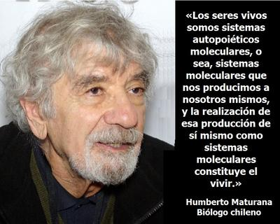

Este 6 de mayo de 2026, se cumplen cinco años del fallecimiento del biólogo chileno Humberto Maturana, uno de los autores de la teoría de la autopoiesis (o autocreación), y vale la pena recordarlo, no con solemnidad vacía, sino con la claridad que caracterizó su pensamiento. Porque si algo hizo Maturana —sin necesidad de proclamas militantes— fue vaciar de contenido explicativo a lo sobrenatural, en uno de los terrenos favoritos de la religión: el origen y la naturaleza de la vida.


Humberto Maturana nació en la ciudad de Santiago en 1928, y falleció en 2021, a los 92 años. Fue médico de formación en la Universidad de Chile, doctor en biología por Harvard, y realizó estudios postdoctorales en el Massachusetts Institute of Technology, MIT. También fue Profesor de la Universidad de Chile, y Premio Nacional de Ciencias en 1994. Pero su prestigio internacional no provino de frases bonitas, sino de una idea radicalmente simple y profundamente perturbadora para las creencias tradicionales.
En la década de 1970, Maturana creó y desarrolló, «junto al también destacado biólogo chileno Francisco Varela, el concepto de autopoiesis, el cual plantea que, a diferencia de las máquinas, los organismos se gobiernan a sí mismos.» Del griego «auto» (a sí mismo) y «poiesis» (creación)— la autopoiesis expone algo que debería ser obvio, pero que históricamente no lo ha sido: los seres vivos se producen a sí mismos. Y no como metáfora, sino como descripción literal de su organización. En palabras del propio Maturana: «Los seres vivos somos sistemas autopoiéticos moleculares… que nos producimos a nosotros mismos.»
Y es aquí donde la ciencia, cuando se toma en serio, empieza a resultar incómoda (o quizás hasta una herejía elegante), porque si un organismo se mantiene, se organiza y se produce desde su propia dinámica interna, entonces la pregunta clásica de, «¿Quién lo diseñó?», pasa a ser completamente irrelevante.
Maturana no necesitó escribir panfletos contra la religión. Su trabajo hizo algo más efectivo: la volvió innecesaria como explicación. Le dio un golpe silencioso al pensamiento religioso. Durante siglos, las religiones han sostenido que la vida requiere un creador, que el orden implica diseño y que la complejidad exige una inteligencia previa. Y la autopoiesis responde sin dramatismo, que la vida es una organización molecular cerrada, que el orden emerge de la dinámica del sistema, y que la complejidad es producto de procesos naturales acoplados. No hay intención, no hay propósito cósmico, ni hay mente externa diseñando. Sólo hay biología funcionando.
Rara vez Maturana se etiquetó como ateo o agnóstico en términos públicos, pero su postura encarna lo que en ciencia se denomina «ateísmo metodológico». Es decir, no se niega a «Dios» como un acto ideológico, simplemente no se lo necesita en ninguna explicación. Y al final esto es más devastador que el ateísmo militante, porque no discute con la religión, la deja sin función.
Bajo la concepción de Maturana, el conocimiento no es revelado, es construido biológicamente; la realidad no es absoluta, es configurada por el sistema nervioso, porque la percepción no es una ventana, es una operación interna. ¿Dónde queda entonces la «verdad divina»? —en el mismo lugar donde quedaron los dioses que explicaban los rayos o las enfermedades, en el museo de las ideas superadas.
Pero otro golpe elegante al pensamiento religioso vino de su teoría del conocimiento. Para Maturana nosotros no accedemos a una realidad objetiva independiente, operamos dentro de un determinismo estructural, porque lo que llamamos «realidad», es resultado de nuestra biología. Y esto desmonta una de las bases psicológicas de la religión: la creencia de que el ser humano puede «captar» verdades absolutas reveladas. No. Lo que hacemos es generar coherencias internas que nos permiten vivir. Las religiones, en este sentido, no son verdades trascendentes, son configuraciones culturales de la experiencia humana.
Y a la vez, el ser humano deja de ser el centro cósmico. Porque la obra de Maturana destruye también, con calma quirúrgica, el antropocentrismo: no somos el fin último de ninguna creación, ni estamos hechos a imagen y semejanza de ninguna divinidad; somos sistemas biológicos que emergemos, nos mantenemos y desaparecemos. Y aun así —o precisamente por eso—, podemos hablar de ética, lenguaje y convivencia. Pero no porque exista un mandato divino, sino porque somos organismos que vivimos en redes de relaciones.
En consecuencia, podemos decir que Maturana fue un pensador incómodo. Entre sus obras destacan: «El árbol del conocimiento», «De máquinas y seres vivos», «La realidad: ¿objetiva o construida?» y «Emociones y lenguaje en educación y política». No son libros fáciles, y eso es parte del problema: las ideas que realmente cambian nuestra visión del mundo, rara vez vienen en formato de consigna.
A cinco años de su muerte, lo más relevante de Maturana no es sólo su biología, sino su consecuencia intelectual: demostró que se puede explicar la vida, el conocimiento y lo humano, sin recurrir a lo sobrenatural. Y eso, en un mundo donde aún se enseñan mitos como si fueran respuestas, es profundamente subversivo. No porque ataque la religión directamente, sino porque demuestra algo mucho más embarazoso: que nunca fue necesaria.
Humberto Maturana no fue un predicador del ateísmo, fue algo más peligroso para las certezas religiosas: un científico que no necesitó a ningún «Dios» para explicar nada importante. Y cuando una idea deja de ser necesaria, su destino no es ser refutada, sino ser olvidada, echarla al cesto de las creencias superadas.
[Godless Freeman]
https://www.eltiempo.com/vida/ciencia/que-es-la-autopoiesis-del-biologo-humberto-maturana-317942
Comentarios
Comments powered by Disqus